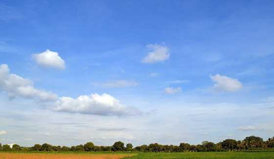
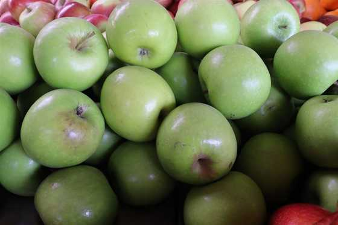
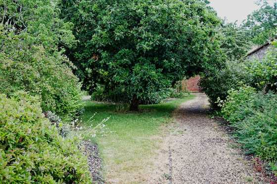
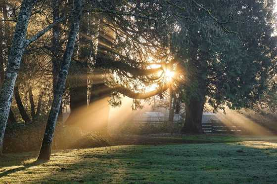
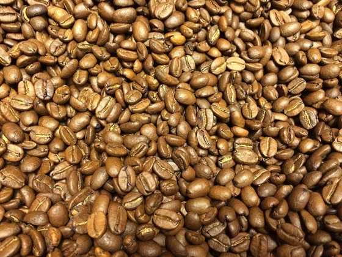

千葉県八千代市・吉橋(花輪地区)のカフェ
この地で育った野菜と、
ほっとひといきを。
87wa(はなわ)は、オーナーが生まれ育った吉橋の地に、地域の魅力を発信し、みんながホッとひといきつける場所にしたいという想いで開いたお店です。
お店の由来・想い
生まれ育った土地への、恩返し。
紹介記事によると、87waは2026年6月1日に八千代市吉橋でグランドオープンしたカフェ・レストランです。オーナーは、八千代市発のパクチー生産者「PAKUCI SISTERS」の立川あゆみさん。お店のある場所は、あゆみさんが生まれ育った吉橋の土地で、「地域の魅力をもっと発信し、みんなのホッとひといきつける場所にしたい」「本当にこの地に恩返しをしたくて」という思いで開かれたと紹介されています。
サラダの野菜は、ご両親の畑で採れたものが中心と紹介されています。パクチー専門店ではなく、パクチーが苦手な方も楽しめるメニュー構成で、ご希望の方にはパクチーの無料サービスもあるとのことです。
店内は、鮮やかなイエローの壁やカウンターのブルーのタイル、カラフルな椅子が特徴と紹介されています。このページの黄色と青の配色は、その印象にちなんだ制作側のイメージです。
店名の「87wa」の意味は確認できていません。「はなわ」は地名の花輪にちなむ可能性がありますが、制作側のイメージであり、お店の考えを示すものではありません。
情報源: ごぎゃんネット(2026年6月の紹介記事) / 千葉ランチ(紹介記事) / Instagram
写真は、畑・実り・光の雰囲気を伝えるフリー素材です。お店の写真ではありません。



メニュー
お昼のごはんと、午後のカフェ。
紹介記事では、次のようなメニューが紹介されています(内容は取材時のもので、変わることがあります)。
ランチ
「大人のお子様ランチ」、ガパオライス、ハンバーグ、ラザニア、パスタなど。地元野菜を使った料理が紹介されています。
デザート
自家製のプリンやチーズケーキなど。
コーヒー
船橋のコーヒー店の豆を使用していると紹介されています。
価格・営業時間・定休日: 準備中(最新情報はInstagramをご覧ください)



口コミ イメージ例
こんな声が届くお店に。
以下は制作側が作成したイメージ例で、実在のお客様の声ではありません。
野菜がたっぷりで、食べ終えたあと体が軽くなった気がしました。
カラフルな店内に入ると、それだけで気分が明るくなります。
ランチのあとにデザートとコーヒーで、ゆっくり過ごせました。


アクセス
お店のご案内
| 所在地 | 〒276-0047 千葉県八千代市吉橋1348-1 |
|---|---|
| 電話 | 準備中 |
| 営業時間 | 準備中 |
| 定休日 | 準備中 |
| SNS | Instagram @87wa_cafe |
営業時間・価格は変更されることがあるため、掲載せず「準備中」としています。